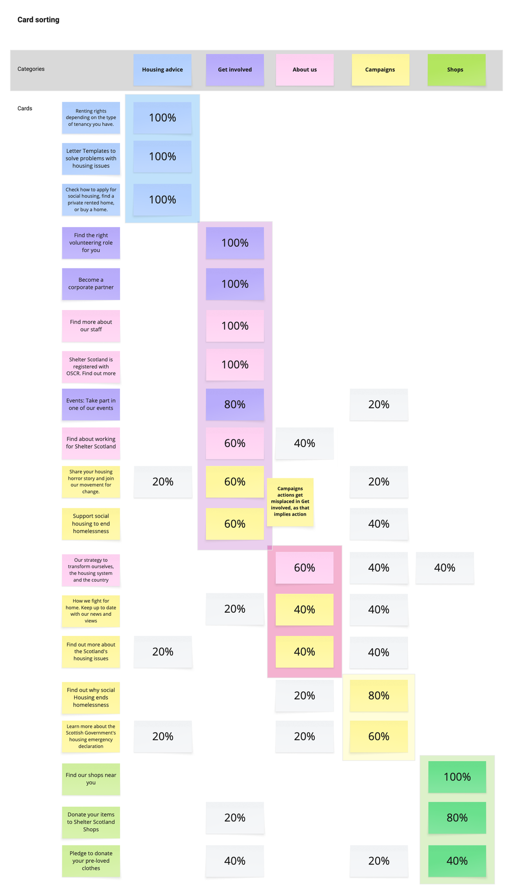
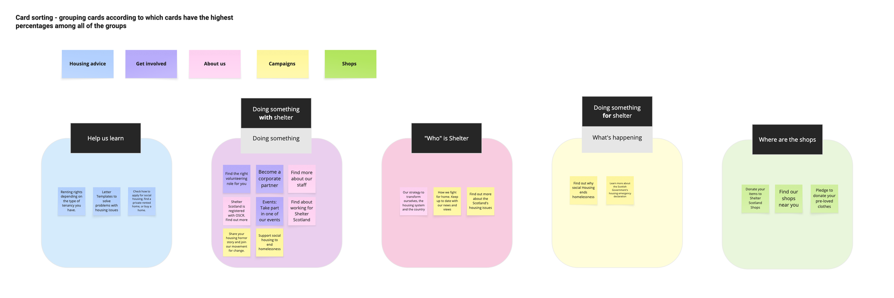
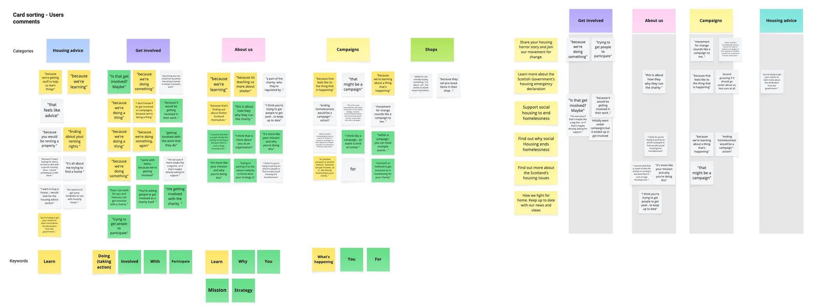
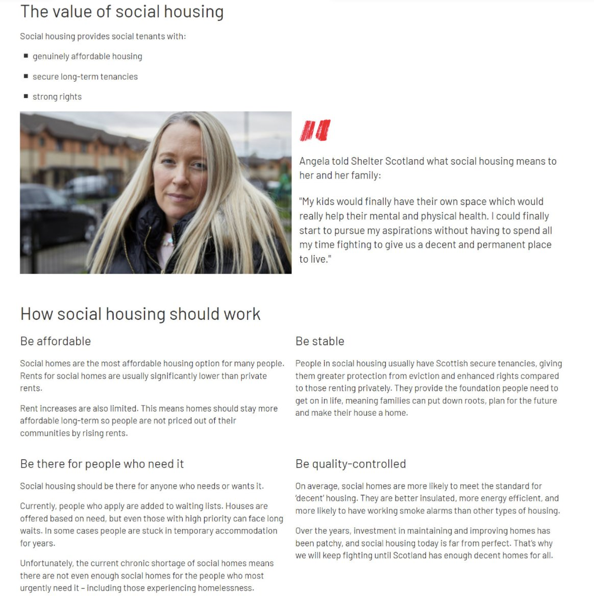
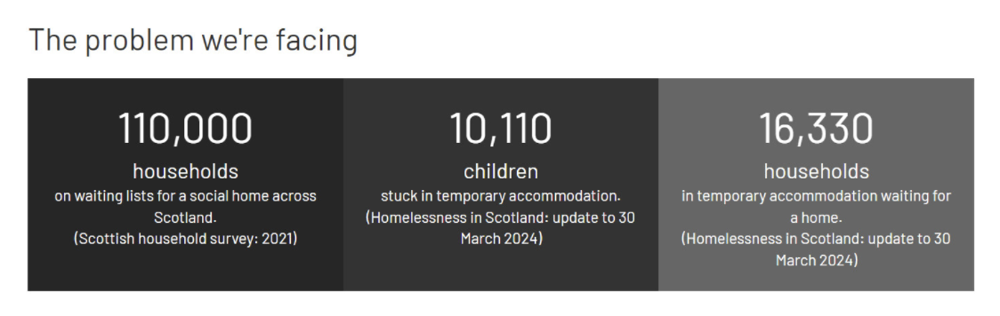
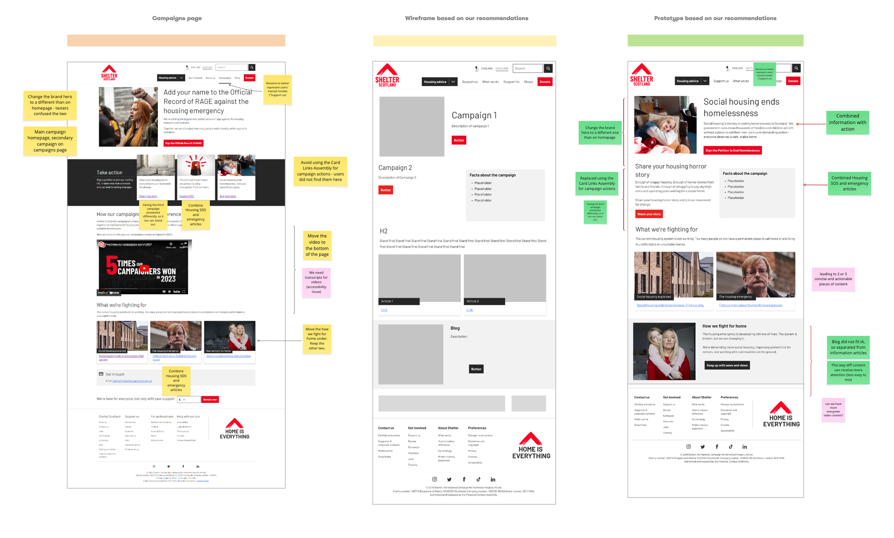
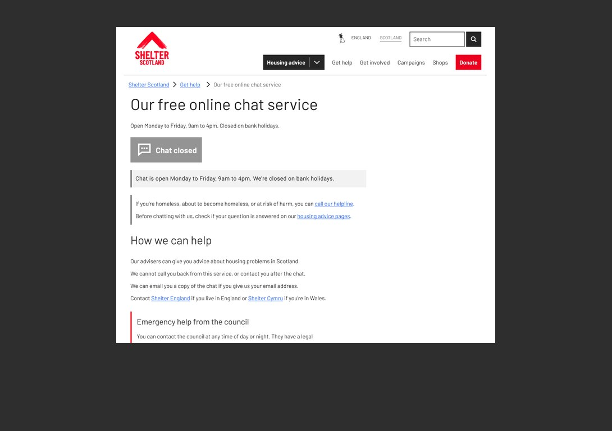

Campaigns page research & redesign
Overview
Shelter Scotland’s campaigns page had never been formally tested, despite being a key area for encouraging public engagement with housing issues and advocacy initiatives. Existing heatmap data suggested users were more interested in learning about Shelter Scotland’s campaigns than actively participating in them, but it was unclear whether this reflected genuine user intent or usability issues within the experience itself.
The project uncovered significant issues around campaign discoverability, content hierarchy, and user understanding of campaign actions. These findings directly informed a redesigned campaign page structure and sparked broader conversations around the site’s information architecture.
The problem
The campaigns section plays an important role in helping users understand housing issues in Scotland and engage with Shelter Scotland’s advocacy work. However, the page had evolved over time without dedicated usability testing, creating uncertainty around how effectively users could:
- Discover campaign-related content
- Understand the purpose of the campaigns section
- Identify meaningful actions they could take
- Navigate between educational content and campaign participation
We suspected that users may have been experiencing friction when navigating to campaigns organically, either through the homepage or the About Us section. Existing behavioural data also suggested users were consuming campaign-related information but engaging less with campaign actions such as petitions or advocacy initiatives.
Research
We conducted remote unmoderated usability testing using Userlytics to understand how users interacted with the campaigns section and whether the existing experience aligned with their expectations. Participants completed a series of think-aloud tasks while their sessions were recorded for later review and analysis.
The research focused on three key areas:
- Discoverability of campaign content
- Findability of campaign actions
- Comprehension of campaign messaging
Task 1: Understanding user expectations
To better understand what users expected to find within the campaigns section, we ran a closed card sorting exercise. Participants were asked to categorise different pieces of Shelter Scotland content under existing top-level navigation labels such as:
- Housing Advice
- Get Involved
- About Us
- Campaigns
- Shop
The exercise helped us evaluate whether the existing information architecture matched user mental models and where users expected campaign-related content to live.
Task 2: Finding and engaging with a campaign
Participants started on the Shelter Scotland homepage and were asked to locate and engage with a homelessness-related campaign petition. This task allowed us to observe:
- Whether users could intuitively locate campaign content
- How users interpreted campaign calls to action
- Which navigation pathways users naturally followed
- Whether campaign-related language and structure supported engagement
We intentionally allowed participants to take alternative routes through the site, as these behaviours revealed where users expected campaign activity to exist.
Task 3: Understanding campaign messaging
Participants were then directed to campaign-related content focused on social housing and asked to:
- Find key information
- Explain their understanding of the content
- Reflect on the clarity and effectiveness of the messaging
This task helped us evaluate both findability and comprehension, while also uncovering how effectively long-form campaign content supported engagement and understanding.
Key findings
Users associated campaigns with action, not information

The card sorting exercise revealed significant uncertainty around the “Campaigns” category. Compared to other navigation areas, campaign-related content was distributed far more inconsistently across categories.
Most participants associated campaigns with direct action rather than educational or informational content. Users expected campaigns to involve petitions, advocacy opportunities, or ways to actively support Shelter Scotland’s work.
“I don’t know what Housing SOS is. I think that’s just finding out more info rather than being proactive.”
This mismatch between user expectations and content structure created confusion around what the campaigns section actually offered.


Campaign actions lacked visibility
In the navigation task only one participant successfully located the intended campaign through the expected pathway.
Several participants explored alternative sections of the site instead, particularly areas focused on help or getting involved. Others became distracted by the RAGE campaign content featured prominently on both the homepage and campaigns page.
Two participants skipped over the “Take Action” section entirely, while another explicitly noted that the campaign did not stand out visually.
The findings suggested that campaign actions were not clearly differentiated from informational content, making engagement opportunities easy to miss.
“Big buttons that say, you know, find out more, fundraise with us, join our campaigns and get advice might be nice.”
Users confused the campaigns page with the homepage
Three participants mistook the campaigns page for the homepage due to similarities in layout and content structure.
This reduced users’ understanding of where they were within the site and weakened the distinction between general awareness content and campaign-specific engagement. The overlap also contributed to navigation uncertainty and made campaign journeys feel less intentional.
Users understood the messaging but struggled with content length
All participants successfully located and understood the social housing content.
Most users clearly articulated the purpose and benefits of social housing, suggesting the messaging itself was effective. However, participants consistently described the content as overly long and visually overwhelming.

Large blocks of text created fatigue and reduced engagement, particularly when users were scanning for key information.
“Having the wordiness of it could potentially be a barrier.”
“This is a wall of text that I would struggle with.”
Participants responded positively to sections containing statistics and structured information, suggesting that more visual hierarchy and content chunking would improve readability.

Users wanted clearer next steps after reading
A recurring theme across sessions was uncertainty around what users could do after consuming campaign content.
Participants expected clearer pathways into action and wanted stronger connections between educational content and opportunities to support Shelter Scotland’s work. Several users reached the end of articles feeling the experience simply stopped rather than guiding them toward meaningful engagement.
“You get to the end of the article and the response is ‘okay, what can I do about this?’ And the page ends.”
This highlighted a disconnect between awareness-building content and actionable participation.
Design proposal
The findings directly informed a proposed redesign of the campaigns page focused on improving clarity, hierarchy, and engagement. The new direction aimed to:
- Clearly separate campaigns from articles and supporting content
- Reduce visual clutter across the page
- Create stronger distinction between informational and action-oriented content
- Improve visibility of campaign actions and participation opportunities
- Encourage progressive engagement as users scrolled through the experience
The revised hierarchy presented campaigns more intentionally and reduced competition between content types. Campaigns were given clearer prominence, while blog and article content was repositioned into dedicated supporting sections.
We also identified opportunities to:
- Redesign the “Take Action” section
- Improve campaign labelling and content clarity
- Introduce stronger visual hierarchy and clearer calls to action
- Break long-form content into more digestible sections using quotes, statistics, and visual components
- Surface relevant actions directly alongside campaign education content

The project ultimately shifted the focus from simply presenting campaign information to actively supporting campaign engagement.
Outcome & next steps
The recommendations from this research informed upcoming updates to the campaigns experience alongside the launch of new campaigns.
More importantly, the project sparked broader discussions around the website’s information architecture and highlighted the need for clearer separation between informational, organisational, and advocacy-related content across the platform.
The work also reinforced the importance of aligning campaign experiences with user expectations. Users were motivated to engage with Shelter Scotland’s mission, but the existing structure and presentation often made participation difficult to recognise or act upon.
By identifying where users experienced friction, confusion, and content fatigue, we were able to establish a clearer foundation for future campaign and content design decisions.
Reflection
One of the most valuable insights from this project was recognising how strongly users associated campaigns with action and participation rather than information alone.
While the original experience prioritised awareness-building content, the research showed that users expected clearer pathways into support. Small changes in hierarchy, labelling, and content structure had a significant impact on how users interpreted the purpose of the page.
The project also highlighted how closely content strategy, information architecture, and UX design influence one another. Many of the usability issues we uncovered were not caused by individual interface components, but by broader structural and organisational decisions across the experience.
This research became an important starting point for wider conversations about navigation, content discoverability, and engagement across the Shelter Scotland website.
Other projects
Webchat CTA research | Shelter Scotland
Setting expectations and offering alternatives when webchat is busy or closed.
Read case study